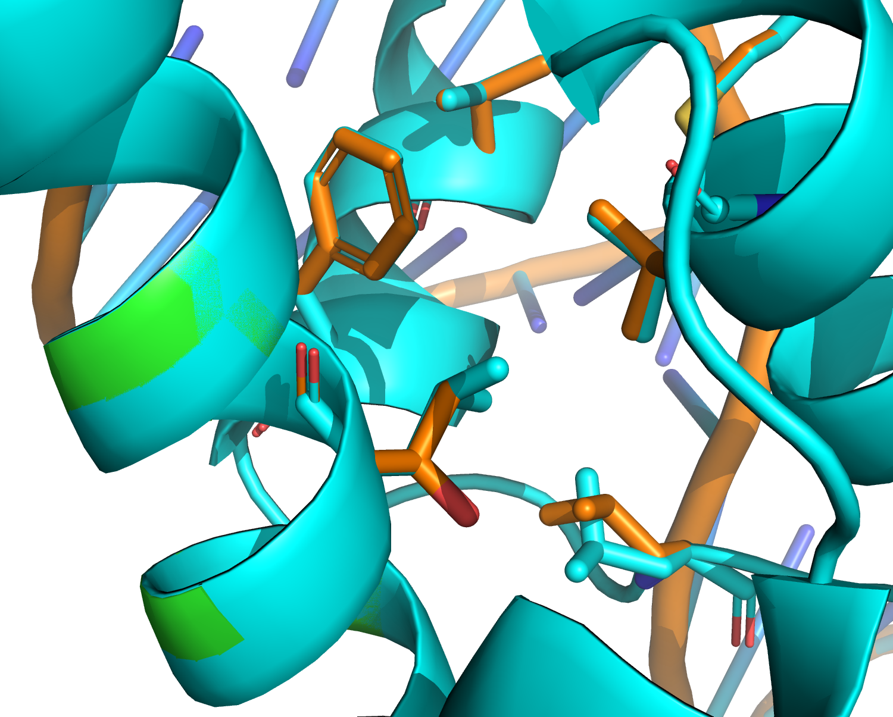
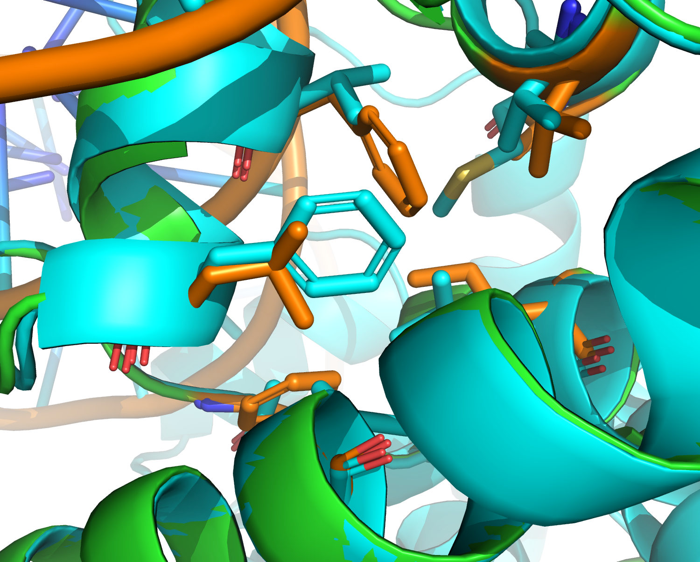

Rosetta Design¶
In this exercise we’ll be designing some core residues of the Lambda Repressor-Operator complex. We will start out with some fixed-backbone design on seven core residues, then move onto flexible-backbone and finally flexible-backbone with layered design. Then, in teams, you will generate a few models from each of these protocols, and compare your sequences to the results of an experimental mutagenesis selection from Lim, et al (1989) (https://www.nature.com/articles/339031a0.pdf).
Setup¶
Before we do anything, activate your environemnt, clone the input file repository, and set up a RosEasy workspace and import some input and parameter files.
To get the files we’ll need for this exercise, type the following:
cd /path/to/class/folder
conda activate proteindesign
git clone https://github.com/Kortemme-Lab/protein_design_course_files.git
RosEasy will ask you for a few input files. Not all are required for every design task, so for those you can just hid <enter>. We will need an input PDB file and a resfile. RosEasy will also ask you for the path to your python executable; make sure you give it the path to the python for your virtual environment. You may find it convenient to add an environmental variable - to do so, add the line ROSEASY_PYTHON=/path/to/anaconda/envs/proteindesign/bin/python to your ~/.bashrc file.
Now let’s set up the workspace. In your terminal, enter the following commands:
roseasy setup design_exercise
Provide RosEasy with the paths to your input file. They should be in protein_design_course_files/design_exercise.
<input: Python path> /path/to/anaconda/envs/proteindesign/bin/python
<input: PDB file> protein_design_course_files/design_exercise/1LMB_relaxed.pdb
<input: resfile> protein_design_course_files/design_exercise/resfile
Once your workspace is set up, cd into its root directory.
cd design_exercise
Interacting with PyRosetta¶
We’ll do the first part of the exercise in a Jupyter notebook. Enter the command jupyter notebook, and in the browser window that opens, click New > Python3.
In the Jupyter notebook, start with some PyRosetta setup. Before you run any other PyRosetta commands, you must run an init() command. It takes a string of options as an argument. The options we will be using are:
-ex1- Turns on one level of extra rotamers for more precise packing.-ex2- Turns on a second level of extra rotamers.-use_input_sc- Adds the rotamers from the input structure to the rotamer set.
from pyrosetta import rosetta, init, pose_from_file, create_score_function
from roseasy import pipeline
init('-ex1 -ex2 -use_input_sc')
---------------------------------------------------------------------------
ModuleNotFoundError Traceback (most recent call last)
<ipython-input-1-bc435ea9c691> in <module>
----> 1 from pyrosetta import rosetta, init, pose_from_file, create_score_function
2 from roseasy import pipeline
3 init('-ex1 -ex2 -use_input_sc')
ModuleNotFoundError: No module named 'pyrosetta'
Next we will import a pose and create a workspace object. A pose contains all conformational and sequence information of a protein object. A workspace is a RosEasy class that will help us keep track of parameter files.
pose = pose_from_file('input.pdb.gz')
workspace = pipeline.workspace_from_dir('.')
core.chemical.GlobalResidueTypeSet: {0} Finished initializing fa_standard residue type set. Created 985 residue types
core.chemical.GlobalResidueTypeSet: {0} Total time to initialize 0.932084 seconds.
core.import_pose.import_pose: {0} File 'input.pdb.gz' automatically determined to be of type PDB
Setting up the PyMOL Observer¶
For now, it will be instructive to view the models as we make changes. The PyMOL Observer tool in Rosetta automatically sends a new structure to PyMOL whenever a change is made to a pose’s coordinates. Before we do that, however, we need to set PyMOL up so it can receive structures from Rosetta.
Open a new terminal, activate your environment, and open PyMOL:
conda activate proteindesign
pymol
In PyMOL, change your directory to the PyRosetta directory, and then run the PyMOLRosettaServer.py script.
cd /path/to/anaconda/envs/proteindesign/lib/python3.7/site-packages/pyrosetta
run PyMOLRosettaServer.py
PyMOL should display a message that says
PyMOL <---> PyRosetta link started!
Now we are ready to set up our PyMOL mover.
# Setup the PyMOL mover
pymover = rosetta.protocols.moves.AddPyMOLObserver(pose, False)
Now score the input structure: create a scorefunction using the “ref2015” parameters and apply it to the pose.
sfxn = create_score_function('ref2015')
sfxn(pose)
# Your protein should now appear in the PyMOL window
core.scoring.etable: {0} Starting energy table calculation
core.scoring.etable: {0} smooth_etable: changing atr/rep split to bottom of energy well
core.scoring.etable: {0} smooth_etable: spline smoothing lj etables (maxdis = 6)
core.scoring.etable: {0} smooth_etable: spline smoothing solvation etables (max_dis = 6)
core.scoring.etable: {0} Finished calculating energy tables.
basic.io.database: {0} Database file opened: scoring/score_functions/hbonds/ref2015_params/HBPoly1D.csv
basic.io.database: {0} Database file opened: scoring/score_functions/hbonds/ref2015_params/HBFadeIntervals.csv
basic.io.database: {0} Database file opened: scoring/score_functions/hbonds/ref2015_params/HBEval.csv
basic.io.database: {0} Database file opened: scoring/score_functions/hbonds/ref2015_params/DonStrength.csv
basic.io.database: {0} Database file opened: scoring/score_functions/hbonds/ref2015_params/AccStrength.csv
basic.io.database: {0} Database file opened: scoring/score_functions/rama/fd/all.ramaProb
basic.io.database: {0} Database file opened: scoring/score_functions/rama/fd/prepro.ramaProb
basic.io.database: {0} Database file opened: scoring/score_functions/omega/omega_ppdep.all.txt
basic.io.database: {0} Database file opened: scoring/score_functions/omega/omega_ppdep.gly.txt
basic.io.database: {0} Database file opened: scoring/score_functions/omega/omega_ppdep.pro.txt
basic.io.database: {0} Database file opened: scoring/score_functions/omega/omega_ppdep.valile.txt
basic.io.database: {0} Database file opened: scoring/score_functions/P_AA_pp/P_AA
basic.io.database: {0} Database file opened: scoring/score_functions/P_AA_pp/P_AA_n
core.scoring.P_AA: {0} shapovalov_lib::shap_p_aa_pp_smooth_level of 1( aka low_smooth ) got activated.
basic.io.database: {0} Database file opened: scoring/score_functions/P_AA_pp/shapovalov/10deg/kappa131/a20.prop
basic.io.database: {0} Database file opened: scoring/score_functions/elec_cp_reps.dat
core.scoring.elec.util: {0} Read 40 countpair representative atoms
core.pack.dunbrack.RotamerLibrary: {0} shapovalov_lib_fixes_enable option is true.
core.pack.dunbrack.RotamerLibrary: {0} shapovalov_lib::shap_dun10_smooth_level of 1( aka lowest_smooth ) got activated.
core.pack.dunbrack.RotamerLibrary: {0} Binary rotamer library selected: /Users/codykrivacic/software/anaconda3/envs/proteindesign/lib/python3.7/site-packages/pyrosetta/database/rotamer/shapovalov/StpDwn_0-0-0/Dunbrack10.lib.bin
core.pack.dunbrack.RotamerLibrary: {0} Using Dunbrack library binary file '/Users/codykrivacic/software/anaconda3/envs/proteindesign/lib/python3.7/site-packages/pyrosetta/database/rotamer/shapovalov/StpDwn_0-0-0/Dunbrack10.lib.bin'.
core.pack.dunbrack.RotamerLibrary: {0} Dunbrack 2010 library took 0.22187 seconds to load from binary
-651.2056059515234
The Rosetta score of the pose is -648.59 REU.
Fixed-backbone design¶
Next, let’s set up a task factory and movemap for our design run. The TaskFactory will read the resfile we give it, telling Rosetta which positions are allowed to mutate (and to which residue types), which positions are allowed to repack but not mutate, and which positions are not allowed to move at all during packing operations.
The MoveMap tells certain Rosetta protocols which positions are allowed to move their backbone and sidechain degrees of freedom. In this case, the minimization step of the Relax protocol will use the MoveMap to determine which degrees of freedom are to be minimized.
from pyrosetta.rosetta.core.pack.task.operation import ReadResfile
from pyrosetta.rosetta.core.pack.task import TaskFactory
from pyrosetta.rosetta.core.kinematics import MoveMap
# Set up a task factory, which tells Rosetta which residues are designable and/or repackable.
# Our task factory will read the resfile to figure this out, but it is possible to
# determine designable vs. repackable vs. neither residues using residue selector logic.
taskfactory = TaskFactory()
readresfile = ReadResfile(workspace.resfile_path)
taskfactory.push_back(readresfile)
# Now we set up a movemap. This tells Rosetta which residues are allowed to move their backbone and
# sidechain degrees of freedom during any minimization steps.
movemap = MoveMap()
# We will be starting out with fixed-backbone design, so let's turn off all backbone degrees of freedom
# while keeping sidechain DOF on.
movemap.set_bb(False)
movemap.set_chi(True)
Now we are ready to set up a FastDesign mover. FastDesign normally iterates between repacking/designing sidechains and minimizing sidechain + backbone degrees of freedom. Since we turned off backbone degrees of freedom in the MoveMap, it will only minimize sidechain degrees of freedom.
from pyrosetta.rosetta.protocols.denovo_design.movers import FastDesign
# Set up a FastDesign object
fd = FastDesign()
fd.set_task_factory(taskfactory)
fd.set_movemap(movemap)
fd.set_scorefxn(sfxn)
core.scoring.ScoreFunctionFactory: {0} SCOREFUNCTION: ref2015
In PyMOL, let’s color the residues that we will be designing.
Make a selection by entering the following command:
sele designable, (resi 13 or resi 31 or resi 35 or resi 42 or resi 46 or resi 52 or resi 60) and chain A
Show them in stick form:
show sticks, designable
Hide hydrogens:
hide everything, hydro
Color the selected carbon atoms orange:
color orange, designable and name c*
Now we are ready to apply the mover and watch what happens.
# Apply the mover and observ in PyMOL
fd.apply(pose)
protocols.denovo_design.movers.FastDesign: {0} #Packer_Task
protocols.denovo_design.movers.FastDesign: {0}
protocols.denovo_design.movers.FastDesign: {0} Threads to request: ALL AVAILABLE
protocols.denovo_design.movers.FastDesign: {0}
protocols.denovo_design.movers.FastDesign: {0} resid pack? design? allowed_aas
protocols.denovo_design.movers.FastDesign: {0} 1 FALSE FALSE
protocols.denovo_design.movers.FastDesign: {0} 2 FALSE FALSE
protocols.denovo_design.movers.FastDesign: {0} 3 FALSE FALSE
protocols.denovo_design.movers.FastDesign: {0} 4 FALSE FALSE
protocols.denovo_design.movers.FastDesign: {0} 5 FALSE FALSE
protocols.denovo_design.movers.FastDesign: {0} 6 FALSE FALSE
protocols.denovo_design.movers.FastDesign: {0} 7 FALSE FALSE
protocols.denovo_design.movers.FastDesign: {0} 8 FALSE FALSE
protocols.denovo_design.movers.FastDesign: {0} 9 FALSE FALSE
protocols.denovo_design.movers.FastDesign: {0} 10 FALSE FALSE
protocols.denovo_design.movers.FastDesign: {0} 11 FALSE FALSE
protocols.denovo_design.movers.FastDesign: {0} 12 FALSE FALSE
protocols.denovo_design.movers.FastDesign: {0} 13 TRUE TRUE ALA,CYS,ASP,GLU,PHE,GLY,HIS,HIS_D,ILE,LYS,LEU,MET,ASN,PRO,GLN,ARG,SER,THR,VAL,TRP,TYR
protocols.denovo_design.movers.FastDesign: {0} 14 FALSE FALSE
protocols.denovo_design.movers.FastDesign: {0} 15 FALSE FALSE
protocols.denovo_design.movers.FastDesign: {0} 16 FALSE FALSE
protocols.denovo_design.movers.FastDesign: {0} 17 FALSE FALSE
protocols.denovo_design.movers.FastDesign: {0} 18 FALSE FALSE
protocols.denovo_design.movers.FastDesign: {0} 19 FALSE FALSE
protocols.denovo_design.movers.FastDesign: {0} 20 FALSE FALSE
protocols.denovo_design.movers.FastDesign: {0} 21 FALSE FALSE
protocols.denovo_design.movers.FastDesign: {0} 22 FALSE FALSE
protocols.denovo_design.movers.FastDesign: {0} 23 FALSE FALSE
protocols.denovo_design.movers.FastDesign: {0} 24 FALSE FALSE
protocols.denovo_design.movers.FastDesign: {0} 25 FALSE FALSE
protocols.denovo_design.movers.FastDesign: {0} 26 FALSE FALSE
protocols.denovo_design.movers.FastDesign: {0} 27 FALSE FALSE
protocols.denovo_design.movers.FastDesign: {0} 28 FALSE FALSE
protocols.denovo_design.movers.FastDesign: {0} 29 FALSE FALSE
protocols.denovo_design.movers.FastDesign: {0} 30 FALSE FALSE
protocols.denovo_design.movers.FastDesign: {0} 31 TRUE TRUE ALA,CYS,ASP,GLU,PHE,GLY,HIS,HIS_D,ILE,LYS,LEU,MET,ASN,PRO,GLN,ARG,SER,THR,VAL,TRP,TYR
protocols.denovo_design.movers.FastDesign: {0} 32 FALSE FALSE
protocols.denovo_design.movers.FastDesign: {0} 33 FALSE FALSE
protocols.denovo_design.movers.FastDesign: {0} 34 FALSE FALSE
protocols.denovo_design.movers.FastDesign: {0} 35 TRUE TRUE ALA,CYS,ASP,GLU,PHE,GLY,HIS,HIS_D,ILE,LYS,LEU,MET,ASN,PRO,GLN,ARG,SER,THR,VAL,TRP,TYR
protocols.denovo_design.movers.FastDesign: {0} 36 FALSE FALSE
protocols.denovo_design.movers.FastDesign: {0} 37 FALSE FALSE
protocols.denovo_design.movers.FastDesign: {0} 38 FALSE FALSE
protocols.denovo_design.movers.FastDesign: {0} 39 FALSE FALSE
protocols.denovo_design.movers.FastDesign: {0} 40 FALSE FALSE
protocols.denovo_design.movers.FastDesign: {0} 41 FALSE FALSE
protocols.denovo_design.movers.FastDesign: {0} 42 TRUE TRUE ALA,CYS,ASP,GLU,PHE,GLY,HIS,HIS_D,ILE,LYS,LEU,MET,ASN,PRO,GLN,ARG,SER,THR,VAL,TRP,TYR
protocols.denovo_design.movers.FastDesign: {0} 43 FALSE FALSE
protocols.denovo_design.movers.FastDesign: {0} 44 FALSE FALSE
protocols.denovo_design.movers.FastDesign: {0} 45 FALSE FALSE
protocols.denovo_design.movers.FastDesign: {0} 46 TRUE TRUE ALA,CYS,ASP,GLU,PHE,GLY,HIS,HIS_D,ILE,LYS,LEU,MET,ASN,PRO,GLN,ARG,SER,THR,VAL,TRP,TYR
protocols.denovo_design.movers.FastDesign: {0} 47 FALSE FALSE
protocols.denovo_design.movers.FastDesign: {0} 48 FALSE FALSE
protocols.denovo_design.movers.FastDesign: {0} 49 FALSE FALSE
protocols.denovo_design.movers.FastDesign: {0} 50 FALSE FALSE
protocols.denovo_design.movers.FastDesign: {0} 51 FALSE FALSE
protocols.denovo_design.movers.FastDesign: {0} 52 TRUE TRUE ALA,CYS,ASP,GLU,PHE,GLY,HIS,HIS_D,ILE,LYS,LEU,MET,ASN,PRO,GLN,ARG,SER,THR,VAL,TRP,TYR
protocols.denovo_design.movers.FastDesign: {0} 53 FALSE FALSE
protocols.denovo_design.movers.FastDesign: {0} 54 FALSE FALSE
protocols.denovo_design.movers.FastDesign: {0} 55 FALSE FALSE
protocols.denovo_design.movers.FastDesign: {0} 56 FALSE FALSE
protocols.denovo_design.movers.FastDesign: {0} 57 FALSE FALSE
protocols.denovo_design.movers.FastDesign: {0} 58 FALSE FALSE
protocols.denovo_design.movers.FastDesign: {0} 59 FALSE FALSE
protocols.denovo_design.movers.FastDesign: {0} 60 TRUE TRUE ALA,CYS,ASP,GLU,PHE,GLY,HIS,HIS_D,ILE,LYS,LEU,MET,ASN,PRO,GLN,ARG,SER,THR,VAL,TRP,TYR
protocols.denovo_design.movers.FastDesign: {0} 61 FALSE FALSE
protocols.denovo_design.movers.FastDesign: {0} 62 FALSE FALSE
protocols.denovo_design.movers.FastDesign: {0} 63 FALSE FALSE
protocols.denovo_design.movers.FastDesign: {0} 64 FALSE FALSE
protocols.denovo_design.movers.FastDesign: {0} 65 FALSE FALSE
protocols.denovo_design.movers.FastDesign: {0} 66 FALSE FALSE
protocols.denovo_design.movers.FastDesign: {0} 67 FALSE FALSE
protocols.denovo_design.movers.FastDesign: {0} 68 FALSE FALSE
protocols.denovo_design.movers.FastDesign: {0} 69 FALSE FALSE
protocols.denovo_design.movers.FastDesign: {0} 70 FALSE FALSE
protocols.denovo_design.movers.FastDesign: {0} 71 FALSE FALSE
protocols.denovo_design.movers.FastDesign: {0} 72 FALSE FALSE
protocols.denovo_design.movers.FastDesign: {0} 73 FALSE FALSE
protocols.denovo_design.movers.FastDesign: {0} 74 FALSE FALSE
protocols.denovo_design.movers.FastDesign: {0} 75 FALSE FALSE
protocols.denovo_design.movers.FastDesign: {0} 76 FALSE FALSE
protocols.denovo_design.movers.FastDesign: {0} 77 FALSE FALSE
protocols.denovo_design.movers.FastDesign: {0} 78 FALSE FALSE
protocols.denovo_design.movers.FastDesign: {0} 79 FALSE FALSE
protocols.denovo_design.movers.FastDesign: {0} 80 FALSE FALSE
protocols.denovo_design.movers.FastDesign: {0} 81 FALSE FALSE
protocols.denovo_design.movers.FastDesign: {0} 82 FALSE FALSE
protocols.denovo_design.movers.FastDesign: {0} 83 FALSE FALSE
protocols.denovo_design.movers.FastDesign: {0} 84 FALSE FALSE
protocols.denovo_design.movers.FastDesign: {0} 85 FALSE FALSE
protocols.denovo_design.movers.FastDesign: {0} 86 FALSE FALSE
protocols.denovo_design.movers.FastDesign: {0} 87 FALSE FALSE
protocols.denovo_design.movers.FastDesign: {0} 88 FALSE FALSE
protocols.denovo_design.movers.FastDesign: {0} 89 FALSE FALSE
protocols.denovo_design.movers.FastDesign: {0} 90 FALSE FALSE
protocols.denovo_design.movers.FastDesign: {0} 91 FALSE FALSE
protocols.denovo_design.movers.FastDesign: {0} 92 FALSE FALSE
protocols.denovo_design.movers.FastDesign: {0} 93 FALSE FALSE
protocols.denovo_design.movers.FastDesign: {0} 94 FALSE FALSE
protocols.denovo_design.movers.FastDesign: {0} 95 FALSE FALSE
protocols.denovo_design.movers.FastDesign: {0} 96 FALSE FALSE
protocols.denovo_design.movers.FastDesign: {0} 97 FALSE FALSE
protocols.denovo_design.movers.FastDesign: {0} 98 FALSE FALSE
protocols.denovo_design.movers.FastDesign: {0} 99 FALSE FALSE
protocols.denovo_design.movers.FastDesign: {0} 100 FALSE FALSE
protocols.denovo_design.movers.FastDesign: {0} 101 FALSE FALSE
protocols.denovo_design.movers.FastDesign: {0} 102 FALSE FALSE
protocols.denovo_design.movers.FastDesign: {0} 103 FALSE FALSE
protocols.denovo_design.movers.FastDesign: {0} 104 FALSE FALSE
protocols.denovo_design.movers.FastDesign: {0} 105 FALSE FALSE
protocols.denovo_design.movers.FastDesign: {0} 106 FALSE FALSE
protocols.denovo_design.movers.FastDesign: {0} 107 FALSE FALSE
protocols.denovo_design.movers.FastDesign: {0} 108 FALSE FALSE
protocols.denovo_design.movers.FastDesign: {0} 109 FALSE FALSE
protocols.denovo_design.movers.FastDesign: {0} 110 FALSE FALSE
protocols.denovo_design.movers.FastDesign: {0} 111 FALSE FALSE
protocols.denovo_design.movers.FastDesign: {0} 112 FALSE FALSE
protocols.denovo_design.movers.FastDesign: {0} 113 FALSE FALSE
protocols.denovo_design.movers.FastDesign: {0} 114 FALSE FALSE
protocols.denovo_design.movers.FastDesign: {0} 115 FALSE FALSE
protocols.denovo_design.movers.FastDesign: {0} 116 FALSE FALSE
protocols.denovo_design.movers.FastDesign: {0} 117 FALSE FALSE
protocols.denovo_design.movers.FastDesign: {0} 118 FALSE FALSE
protocols.denovo_design.movers.FastDesign: {0} 119 FALSE FALSE
protocols.denovo_design.movers.FastDesign: {0} 120 FALSE FALSE
protocols.denovo_design.movers.FastDesign: {0} 121 FALSE FALSE
protocols.denovo_design.movers.FastDesign: {0} 122 FALSE FALSE
protocols.denovo_design.movers.FastDesign: {0} 123 FALSE FALSE
protocols.denovo_design.movers.FastDesign: {0} 124 FALSE FALSE
protocols.denovo_design.movers.FastDesign: {0} 125 FALSE FALSE
protocols.denovo_design.movers.FastDesign: {0} 126 FALSE FALSE
protocols.denovo_design.movers.FastDesign: {0} 127 FALSE FALSE
protocols.denovo_design.movers.FastDesign: {0} 128 FALSE FALSE
protocols.denovo_design.movers.FastDesign: {0} 129 FALSE FALSE
protocols.denovo_design.movers.FastDesign: {0} 130 FALSE FALSE
protocols.denovo_design.movers.FastDesign: {0} 131 FALSE FALSE
protocols.denovo_design.movers.FastDesign: {0} 132 FALSE FALSE
protocols.denovo_design.movers.FastDesign: {0} 133 FALSE FALSE
protocols.denovo_design.movers.FastDesign: {0} 134 FALSE FALSE
protocols.denovo_design.movers.FastDesign: {0} 135 FALSE FALSE
protocols.denovo_design.movers.FastDesign: {0} 136 FALSE FALSE
protocols.denovo_design.movers.FastDesign: {0} 137 FALSE FALSE
protocols.denovo_design.movers.FastDesign: {0} 138 FALSE FALSE
protocols.denovo_design.movers.FastDesign: {0} 139 FALSE FALSE
protocols.denovo_design.movers.FastDesign: {0} 140 FALSE FALSE
protocols.denovo_design.movers.FastDesign: {0} 141 FALSE FALSE
protocols.denovo_design.movers.FastDesign: {0} 142 FALSE FALSE
protocols.denovo_design.movers.FastDesign: {0} 143 FALSE FALSE
protocols.denovo_design.movers.FastDesign: {0} 144 FALSE FALSE
protocols.denovo_design.movers.FastDesign: {0} 145 FALSE FALSE
protocols.denovo_design.movers.FastDesign: {0} 146 FALSE FALSE
protocols.denovo_design.movers.FastDesign: {0} 147 FALSE FALSE
protocols.denovo_design.movers.FastDesign: {0} 148 FALSE FALSE
protocols.denovo_design.movers.FastDesign: {0} 149 FALSE FALSE
protocols.denovo_design.movers.FastDesign: {0} 150 FALSE FALSE
protocols.denovo_design.movers.FastDesign: {0} 151 FALSE FALSE
protocols.denovo_design.movers.FastDesign: {0} 152 FALSE FALSE
protocols.denovo_design.movers.FastDesign: {0} 153 FALSE FALSE
protocols.denovo_design.movers.FastDesign: {0} 154 FALSE FALSE
protocols.denovo_design.movers.FastDesign: {0} 155 FALSE FALSE
protocols.denovo_design.movers.FastDesign: {0} 156 FALSE FALSE
protocols.denovo_design.movers.FastDesign: {0} 157 FALSE FALSE
protocols.denovo_design.movers.FastDesign: {0} 158 FALSE FALSE
protocols.denovo_design.movers.FastDesign: {0} 159 FALSE FALSE
protocols.denovo_design.movers.FastDesign: {0} 160 FALSE FALSE
protocols.denovo_design.movers.FastDesign: {0} 161 FALSE FALSE
protocols.denovo_design.movers.FastDesign: {0} 162 FALSE FALSE
protocols.denovo_design.movers.FastDesign: {0} 163 FALSE FALSE
protocols.denovo_design.movers.FastDesign: {0} 164 FALSE FALSE
protocols.denovo_design.movers.FastDesign: {0} 165 FALSE FALSE
protocols.denovo_design.movers.FastDesign: {0} 166 FALSE FALSE
protocols.denovo_design.movers.FastDesign: {0} 167 FALSE FALSE
protocols.denovo_design.movers.FastDesign: {0} 168 FALSE FALSE
protocols.denovo_design.movers.FastDesign: {0} 169 FALSE FALSE
protocols.denovo_design.movers.FastDesign: {0} 170 FALSE FALSE
protocols.denovo_design.movers.FastDesign: {0} 171 FALSE FALSE
protocols.denovo_design.movers.FastDesign: {0} 172 FALSE FALSE
protocols.denovo_design.movers.FastDesign: {0} 173 FALSE FALSE
protocols.denovo_design.movers.FastDesign: {0} 174 FALSE FALSE
protocols.denovo_design.movers.FastDesign: {0} 175 FALSE FALSE
protocols.denovo_design.movers.FastDesign: {0} 176 FALSE FALSE
protocols.denovo_design.movers.FastDesign: {0} 177 FALSE FALSE
protocols.denovo_design.movers.FastDesign: {0} 178 FALSE FALSE
protocols.denovo_design.movers.FastDesign: {0} 179 FALSE FALSE
protocols.denovo_design.movers.FastDesign: {0} 180 FALSE FALSE
protocols.denovo_design.movers.FastDesign: {0} 181 FALSE FALSE
protocols.denovo_design.movers.FastDesign: {0} 182 FALSE FALSE
protocols.denovo_design.movers.FastDesign: {0} 183 FALSE FALSE
protocols.denovo_design.movers.FastDesign: {0} 184 FALSE FALSE
protocols.denovo_design.movers.FastDesign: {0} 185 FALSE FALSE
protocols.denovo_design.movers.FastDesign: {0} 186 FALSE FALSE
protocols.denovo_design.movers.FastDesign: {0} 187 FALSE FALSE
protocols.denovo_design.movers.FastDesign: {0} 188 FALSE FALSE
protocols.denovo_design.movers.FastDesign: {0} 189 FALSE FALSE
protocols.denovo_design.movers.FastDesign: {0} 190 FALSE FALSE
protocols.denovo_design.movers.FastDesign: {0} 191 FALSE FALSE
protocols.denovo_design.movers.FastDesign: {0} 192 FALSE FALSE
protocols.denovo_design.movers.FastDesign: {0} 193 FALSE FALSE
protocols.denovo_design.movers.FastDesign: {0} 194 FALSE FALSE
protocols.denovo_design.movers.FastDesign: {0} 195 FALSE FALSE
protocols.denovo_design.movers.FastDesign: {0} 196 FALSE FALSE
protocols.denovo_design.movers.FastDesign: {0} 197 FALSE FALSE
protocols.denovo_design.movers.FastDesign: {0} 198 FALSE FALSE
protocols.denovo_design.movers.FastDesign: {0} 199 FALSE FALSE
protocols.denovo_design.movers.FastDesign: {0} 200 FALSE FALSE
protocols.denovo_design.movers.FastDesign: {0} 201 FALSE FALSE
protocols.denovo_design.movers.FastDesign: {0} 202 FALSE FALSE
protocols.denovo_design.movers.FastDesign: {0} 203 FALSE FALSE
protocols.denovo_design.movers.FastDesign: {0} 204 FALSE FALSE
protocols.denovo_design.movers.FastDesign: {0} 205 FALSE FALSE
protocols.denovo_design.movers.FastDesign: {0} 206 FALSE FALSE
protocols.denovo_design.movers.FastDesign: {0} 207 FALSE FALSE
protocols.denovo_design.movers.FastDesign: {0} 208 FALSE FALSE
protocols.denovo_design.movers.FastDesign: {0} 209 FALSE FALSE
protocols.denovo_design.movers.FastDesign: {0} 210 FALSE FALSE
protocols.denovo_design.movers.FastDesign: {0} 211 FALSE FALSE
protocols.denovo_design.movers.FastDesign: {0} 212 FALSE FALSE
protocols.denovo_design.movers.FastDesign: {0} 213 FALSE FALSE
protocols.denovo_design.movers.FastDesign: {0} 214 FALSE FALSE
protocols.denovo_design.movers.FastDesign: {0} 215 FALSE FALSE
protocols.denovo_design.movers.FastDesign: {0} 216 FALSE FALSE
protocols.denovo_design.movers.FastDesign: {0} 217 FALSE FALSE
protocols.denovo_design.movers.FastDesign: {0} 218 FALSE FALSE
protocols.denovo_design.movers.FastDesign: {0} 219 FALSE FALSE
protocols.relax: {0} turning off DNA bb and chi move
protocols.relax: {0} turning off DNA bb and chi move
protocols.relax: {0} turning off DNA bb and chi move
protocols.relax: {0} turning off DNA bb and chi move
protocols.relax: {0} turning off DNA bb and chi move
protocols.relax: {0} turning off DNA bb and chi move
protocols.relax: {0} turning off DNA bb and chi move
protocols.relax: {0} turning off DNA bb and chi move
protocols.relax: {0} turning off DNA bb and chi move
protocols.relax: {0} turning off DNA bb and chi move
protocols.relax: {0} turning off DNA bb and chi move
protocols.relax: {0} turning off DNA bb and chi move
protocols.relax: {0} turning off DNA bb and chi move
protocols.relax: {0} turning off DNA bb and chi move
protocols.relax: {0} turning off DNA bb and chi move
protocols.relax: {0} turning off DNA bb and chi move
protocols.relax: {0} turning off DNA bb and chi move
protocols.relax: {0} turning off DNA bb and chi move
protocols.relax: {0} turning off DNA bb and chi move
protocols.relax: {0} turning off DNA bb and chi move
protocols.relax: {0} turning off DNA bb and chi move
protocols.relax: {0} turning off DNA bb and chi move
protocols.relax: {0} turning off DNA bb and chi move
protocols.relax: {0} turning off DNA bb and chi move
protocols.relax: {0} turning off DNA bb and chi move
protocols.relax: {0} turning off DNA bb and chi move
protocols.relax: {0} turning off DNA bb and chi move
protocols.relax: {0} turning off DNA bb and chi move
protocols.relax: {0} turning off DNA bb and chi move
protocols.relax: {0} turning off DNA bb and chi move
protocols.relax: {0} turning off DNA bb and chi move
protocols.relax: {0} turning off DNA bb and chi move
protocols.relax: {0} turning off DNA bb and chi move
protocols.relax: {0} turning off DNA bb and chi move
protocols.relax: {0} turning off DNA bb and chi move
protocols.relax: {0} turning off DNA bb and chi move
protocols.relax: {0} turning off DNA bb and chi move
protocols.relax: {0} turning off DNA bb and chi move
protocols.relax: {0} turning off DNA bb and chi move
protocols.relax: {0} turning off DNA bb and chi move
protocols.relax.FastRelax: {0} CMD: repeat -651.206 0 0 0.55
protocols.relax.FastRelax: {0} CMD: coord_cst_weight -651.206 0 0 0.55
protocols.relax.FastRelax: {0} CMD: scale:fa_rep -837.302 0 0 0.022
core.pack.pack_rotamers: {0} built 1960 rotamers at 7 positions.
core.pack.pack_rotamers: {0} Requesting all available threads for interaction graph computation.
core.pack.interaction_graph.interaction_graph_factory: {0} Instantiating PDInteractionGraph
basic.thread_manager.RosettaThreadManager: {?} Creating a thread pool of 1 threads.
basic.thread_manager.RosettaThreadPool: {?} Launched 0 new threads.
core.pack.rotamer_set.RotamerSets: {0} Completed interaction graph pre-calculation in 1 available threads (1 had been requested).
protocols.relax.FastRelax: {0} CMD: repack -843.042 0 0 0.022
protocols.relax.FastRelax: {0} CMD: scale:fa_rep -838.111 0 0 0.02805
protocols.relax.FastRelax: {0} CMD: min -838.125 0 0 0.02805
protocols.relax.FastRelax: {0} CMD: coord_cst_weight -838.125 0 0 0.02805
protocols.relax.FastRelax: {0} CMD: scale:fa_rep -742.226 0 0 0.14575
core.pack.pack_rotamers: {0} built 1385 rotamers at 7 positions.
core.pack.pack_rotamers: {0} Requesting all available threads for interaction graph computation.
core.pack.interaction_graph.interaction_graph_factory: {0} Instantiating PDInteractionGraph
core.pack.rotamer_set.RotamerSets: {0} Completed interaction graph pre-calculation in 1 available threads (1 had been requested).
protocols.relax.FastRelax: {0} CMD: repack -786.69 0 0 0.14575
protocols.relax.FastRelax: {0} CMD: scale:fa_rep -783.308 0 0 0.154
protocols.relax.FastRelax: {0} CMD: min -783.328 0 0 0.154
protocols.relax.FastRelax: {0} CMD: coord_cst_weight -783.328 0 0 0.154
protocols.relax.FastRelax: {0} CMD: scale:fa_rep -720.437 0 0 0.30745
core.pack.pack_rotamers: {0} built 1209 rotamers at 7 positions.
core.pack.pack_rotamers: {0} Requesting all available threads for interaction graph computation.
core.pack.interaction_graph.interaction_graph_factory: {0} Instantiating PDInteractionGraph
core.pack.rotamer_set.RotamerSets: {0} Completed interaction graph pre-calculation in 1 available threads (1 had been requested).
protocols.relax.FastRelax: {0} CMD: repack -726.037 0 0 0.30745
protocols.relax.FastRelax: {0} CMD: scale:fa_rep -721.768 0 0 0.31955
protocols.relax.FastRelax: {0} CMD: min -721.771 0 0 0.31955
protocols.relax.FastRelax: {0} CMD: coord_cst_weight -721.771 0 0 0.31955
protocols.relax.FastRelax: {0} CMD: scale:fa_rep -640.464 0 0 0.55
core.pack.pack_rotamers: {0} built 1128 rotamers at 7 positions.
core.pack.pack_rotamers: {0} Requesting all available threads for interaction graph computation.
core.pack.interaction_graph.interaction_graph_factory: {0} Instantiating PDInteractionGraph
core.pack.rotamer_set.RotamerSets: {0} Completed interaction graph pre-calculation in 1 available threads (1 had been requested).
protocols.relax.FastRelax: {0} CMD: repack -640.704 0 0 0.55
protocols.relax.FastRelax: {0} CMD: min -640.707 0 0 0.55
protocols.relax.FastRelax: {0} MRP: 0 -640.707 -640.707 0 0
protocols.relax.FastRelax: {0} CMD: accept_to_best -640.707 0 0 0.55
protocols.relax.FastRelax: {0} CMD: endrepeat -640.707 0 0 0.55
protocols.relax.FastRelax: {0} CMD: coord_cst_weight -640.707 0 0 0.55
protocols.relax.FastRelax: {0} CMD: scale:fa_rep -826.32 0 0 0.022
core.pack.pack_rotamers: {0} built 1960 rotamers at 7 positions.
core.pack.pack_rotamers: {0} Requesting all available threads for interaction graph computation.
core.pack.interaction_graph.interaction_graph_factory: {0} Instantiating PDInteractionGraph
core.pack.rotamer_set.RotamerSets: {0} Completed interaction graph pre-calculation in 1 available threads (1 had been requested).
protocols.relax.FastRelax: {0} CMD: repack -841.23 0 0 0.022
protocols.relax.FastRelax: {0} CMD: scale:fa_rep -838.204 0 0 0.02805
protocols.relax.FastRelax: {0} CMD: min -838.211 0 0 0.02805
protocols.relax.FastRelax: {0} CMD: coord_cst_weight -838.211 0 0 0.02805
protocols.relax.FastRelax: {0} CMD: scale:fa_rep -779.338 0 0 0.14575
core.pack.pack_rotamers: {0} built 1385 rotamers at 7 positions.
core.pack.pack_rotamers: {0} Requesting all available threads for interaction graph computation.
core.pack.interaction_graph.interaction_graph_factory: {0} Instantiating PDInteractionGraph
core.pack.rotamer_set.RotamerSets: {0} Completed interaction graph pre-calculation in 1 available threads (1 had been requested).
protocols.relax.FastRelax: {0} CMD: repack -786.706 0 0 0.14575
protocols.relax.FastRelax: {0} CMD: scale:fa_rep -783.324 0 0 0.154
protocols.relax.FastRelax: {0} CMD: min -783.344 0 0 0.154
protocols.relax.FastRelax: {0} CMD: coord_cst_weight -783.344 0 0 0.154
protocols.relax.FastRelax: {0} CMD: scale:fa_rep -720.455 0 0 0.30745
core.pack.pack_rotamers: {0} built 1209 rotamers at 7 positions.
core.pack.pack_rotamers: {0} Requesting all available threads for interaction graph computation.
core.pack.interaction_graph.interaction_graph_factory: {0} Instantiating PDInteractionGraph
core.pack.rotamer_set.RotamerSets: {0} Completed interaction graph pre-calculation in 1 available threads (1 had been requested).
protocols.relax.FastRelax: {0} CMD: repack -726.043 0 0 0.30745
protocols.relax.FastRelax: {0} CMD: scale:fa_rep -721.774 0 0 0.31955
protocols.relax.FastRelax: {0} CMD: min -721.777 0 0 0.31955
protocols.relax.FastRelax: {0} CMD: coord_cst_weight -721.777 0 0 0.31955
protocols.relax.FastRelax: {0} CMD: scale:fa_rep -640.464 0 0 0.55
core.pack.pack_rotamers: {0} built 1128 rotamers at 7 positions.
core.pack.pack_rotamers: {0} Requesting all available threads for interaction graph computation.
core.pack.interaction_graph.interaction_graph_factory: {0} Instantiating PDInteractionGraph
core.pack.rotamer_set.RotamerSets: {0} Completed interaction graph pre-calculation in 1 available threads (1 had been requested).
protocols.relax.FastRelax: {0} CMD: repack -640.705 0 0 0.55
protocols.relax.FastRelax: {0} CMD: min -640.708 0 0 0.55
protocols.relax.FastRelax: {0} MRP: 1 -640.708 -640.708 0 0
protocols.relax.FastRelax: {0} CMD: accept_to_best -640.708 0 0 0.55
protocols.relax.FastRelax: {0} CMD: endrepeat -640.708 0 0 0.55
protocols.relax.FastRelax: {0} CMD: coord_cst_weight -640.708 0 0 0.55
protocols.relax.FastRelax: {0} CMD: scale:fa_rep -826.332 0 0 0.022
core.pack.pack_rotamers: {0} built 1960 rotamers at 7 positions.
core.pack.pack_rotamers: {0} Requesting all available threads for interaction graph computation.
core.pack.interaction_graph.interaction_graph_factory: {0} Instantiating PDInteractionGraph
core.pack.rotamer_set.RotamerSets: {0} Completed interaction graph pre-calculation in 1 available threads (1 had been requested).
protocols.relax.FastRelax: {0} CMD: repack -844.187 0 0 0.022
protocols.relax.FastRelax: {0} CMD: scale:fa_rep -839.762 0 0 0.02805
protocols.relax.FastRelax: {0} CMD: min -839.775 0 0 0.02805
protocols.relax.FastRelax: {0} CMD: coord_cst_weight -839.775 0 0 0.02805
protocols.relax.FastRelax: {0} CMD: scale:fa_rep -753.716 0 0 0.14575
core.pack.pack_rotamers: {0} built 1385 rotamers at 7 positions.
core.pack.pack_rotamers: {0} Requesting all available threads for interaction graph computation.
core.pack.interaction_graph.interaction_graph_factory: {0} Instantiating PDInteractionGraph
core.pack.rotamer_set.RotamerSets: {0} Completed interaction graph pre-calculation in 1 available threads (1 had been requested).
protocols.relax.FastRelax: {0} CMD: repack -786.717 0 0 0.14575
protocols.relax.FastRelax: {0} CMD: scale:fa_rep -783.335 0 0 0.154
protocols.relax.FastRelax: {0} CMD: min -783.355 0 0 0.154
protocols.relax.FastRelax: {0} CMD: coord_cst_weight -783.355 0 0 0.154
protocols.relax.FastRelax: {0} CMD: scale:fa_rep -720.463 0 0 0.30745
core.pack.pack_rotamers: {0} built 1209 rotamers at 7 positions.
core.pack.pack_rotamers: {0} Requesting all available threads for interaction graph computation.
core.pack.interaction_graph.interaction_graph_factory: {0} Instantiating PDInteractionGraph
core.pack.rotamer_set.RotamerSets: {0} Completed interaction graph pre-calculation in 1 available threads (1 had been requested).
protocols.relax.FastRelax: {0} CMD: repack -726.049 0 0 0.30745
protocols.relax.FastRelax: {0} CMD: scale:fa_rep -721.779 0 0 0.31955
protocols.relax.FastRelax: {0} CMD: min -721.782 0 0 0.31955
protocols.relax.FastRelax: {0} CMD: coord_cst_weight -721.782 0 0 0.31955
protocols.relax.FastRelax: {0} CMD: scale:fa_rep -640.464 0 0 0.55
core.pack.pack_rotamers: {0} built 1128 rotamers at 7 positions.
core.pack.pack_rotamers: {0} Requesting all available threads for interaction graph computation.
core.pack.interaction_graph.interaction_graph_factory: {0} Instantiating PDInteractionGraph
core.pack.rotamer_set.RotamerSets: {0} Completed interaction graph pre-calculation in 1 available threads (1 had been requested).
protocols.relax.FastRelax: {0} CMD: repack -640.706 0 0 0.55
protocols.relax.FastRelax: {0} CMD: min -640.709 0 0 0.55
protocols.relax.FastRelax: {0} MRP: 2 -640.709 -640.709 0 0
protocols.relax.FastRelax: {0} CMD: accept_to_best -640.709 0 0 0.55
protocols.relax.FastRelax: {0} CMD: endrepeat -640.709 0 0 0.55
protocols.relax.FastRelax: {0} CMD: coord_cst_weight -640.709 0 0 0.55
protocols.relax.FastRelax: {0} CMD: scale:fa_rep -826.345 0 0 0.022
core.pack.pack_rotamers: {0} built 1960 rotamers at 7 positions.
core.pack.pack_rotamers: {0} Requesting all available threads for interaction graph computation.
core.pack.interaction_graph.interaction_graph_factory: {0} Instantiating PDInteractionGraph
core.pack.rotamer_set.RotamerSets: {0} Completed interaction graph pre-calculation in 1 available threads (1 had been requested).
protocols.relax.FastRelax: {0} CMD: repack -844.201 0 0 0.022
protocols.relax.FastRelax: {0} CMD: scale:fa_rep -839.776 0 0 0.02805
protocols.relax.FastRelax: {0} CMD: min -839.789 0 0 0.02805
protocols.relax.FastRelax: {0} CMD: coord_cst_weight -839.789 0 0 0.02805
protocols.relax.FastRelax: {0} CMD: scale:fa_rep -753.731 0 0 0.14575
core.pack.pack_rotamers: {0} built 1385 rotamers at 7 positions.
core.pack.pack_rotamers: {0} Requesting all available threads for interaction graph computation.
core.pack.interaction_graph.interaction_graph_factory: {0} Instantiating PDInteractionGraph
core.pack.rotamer_set.RotamerSets: {0} Completed interaction graph pre-calculation in 1 available threads (1 had been requested).
protocols.relax.FastRelax: {0} CMD: repack -786.729 0 0 0.14575
protocols.relax.FastRelax: {0} CMD: scale:fa_rep -783.347 0 0 0.154
protocols.relax.FastRelax: {0} CMD: min -783.367 0 0 0.154
protocols.relax.FastRelax: {0} CMD: coord_cst_weight -783.367 0 0 0.154
protocols.relax.FastRelax: {0} CMD: scale:fa_rep -720.475 0 0 0.30745
core.pack.pack_rotamers: {0} built 1209 rotamers at 7 positions.
core.pack.pack_rotamers: {0} Requesting all available threads for interaction graph computation.
core.pack.interaction_graph.interaction_graph_factory: {0} Instantiating PDInteractionGraph
core.pack.rotamer_set.RotamerSets: {0} Completed interaction graph pre-calculation in 1 available threads (1 had been requested).
protocols.relax.FastRelax: {0} CMD: repack -726.055 0 0 0.30745
protocols.relax.FastRelax: {0} CMD: scale:fa_rep -721.785 0 0 0.31955
protocols.relax.FastRelax: {0} CMD: min -721.788 0 0 0.31955
protocols.relax.FastRelax: {0} CMD: coord_cst_weight -721.788 0 0 0.31955
protocols.relax.FastRelax: {0} CMD: scale:fa_rep -640.464 0 0 0.55
core.pack.pack_rotamers: {0} built 1128 rotamers at 7 positions.
core.pack.pack_rotamers: {0} Requesting all available threads for interaction graph computation.
core.pack.interaction_graph.interaction_graph_factory: {0} Instantiating PDInteractionGraph
core.pack.rotamer_set.RotamerSets: {0} Completed interaction graph pre-calculation in 1 available threads (1 had been requested).
protocols.relax.FastRelax: {0} CMD: repack -640.707 0 0 0.55
protocols.relax.FastRelax: {0} CMD: min -640.71 0 0 0.55
protocols.relax.FastRelax: {0} MRP: 3 -640.71 -640.71 0 0
protocols.relax.FastRelax: {0} CMD: accept_to_best -640.71 0 0 0.55
protocols.relax.FastRelax: {0} CMD: endrepeat -640.71 0 0 0.55
protocols.relax.FastRelax: {0} CMD: coord_cst_weight -640.71 0 0 0.55
protocols.relax.FastRelax: {0} CMD: scale:fa_rep -826.358 0 0 0.022
core.pack.pack_rotamers: {0} built 1960 rotamers at 7 positions.
core.pack.pack_rotamers: {0} Requesting all available threads for interaction graph computation.
core.pack.interaction_graph.interaction_graph_factory: {0} Instantiating PDInteractionGraph
core.pack.rotamer_set.RotamerSets: {0} Completed interaction graph pre-calculation in 1 available threads (1 had been requested).
protocols.relax.FastRelax: {0} CMD: repack -842.774 0 0 0.022
protocols.relax.FastRelax: {0} CMD: scale:fa_rep -838.838 0 0 0.02805
protocols.relax.FastRelax: {0} CMD: min -838.853 0 0 0.02805
protocols.relax.FastRelax: {0} CMD: coord_cst_weight -838.853 0 0 0.02805
protocols.relax.FastRelax: {0} CMD: scale:fa_rep -762.323 0 0 0.14575
core.pack.pack_rotamers: {0} built 1385 rotamers at 7 positions.
core.pack.pack_rotamers: {0} Requesting all available threads for interaction graph computation.
core.pack.interaction_graph.interaction_graph_factory: {0} Instantiating PDInteractionGraph
core.pack.rotamer_set.RotamerSets: {0} Completed interaction graph pre-calculation in 1 available threads (1 had been requested).
protocols.relax.FastRelax: {0} CMD: repack -786.741 0 0 0.14575
protocols.relax.FastRelax: {0} CMD: scale:fa_rep -783.359 0 0 0.154
protocols.relax.FastRelax: {0} CMD: min -783.379 0 0 0.154
protocols.relax.FastRelax: {0} CMD: coord_cst_weight -783.379 0 0 0.154
protocols.relax.FastRelax: {0} CMD: scale:fa_rep -720.485 0 0 0.30745
core.pack.pack_rotamers: {0} built 1209 rotamers at 7 positions.
core.pack.pack_rotamers: {0} Requesting all available threads for interaction graph computation.
core.pack.interaction_graph.interaction_graph_factory: {0} Instantiating PDInteractionGraph
core.pack.rotamer_set.RotamerSets: {0} Completed interaction graph pre-calculation in 1 available threads (1 had been requested).
protocols.relax.FastRelax: {0} CMD: repack -726.061 0 0 0.30745
protocols.relax.FastRelax: {0} CMD: scale:fa_rep -721.79 0 0 0.31955
protocols.relax.FastRelax: {0} CMD: min -721.793 0 0 0.31955
protocols.relax.FastRelax: {0} CMD: coord_cst_weight -721.793 0 0 0.31955
protocols.relax.FastRelax: {0} CMD: scale:fa_rep -640.464 0 0 0.55
core.pack.pack_rotamers: {0} built 1128 rotamers at 7 positions.
core.pack.pack_rotamers: {0} Requesting all available threads for interaction graph computation.
core.pack.interaction_graph.interaction_graph_factory: {0} Instantiating PDInteractionGraph
core.pack.rotamer_set.RotamerSets: {0} Completed interaction graph pre-calculation in 1 available threads (1 had been requested).
protocols.relax.FastRelax: {0} CMD: repack -640.708 0 0 0.55
protocols.relax.FastRelax: {0} CMD: min -640.711 0 0 0.55
protocols.relax.FastRelax: {0} MRP: 4 -640.711 -640.711 0 0
protocols.relax.FastRelax: {0} CMD: accept_to_best -640.711 0 0 0.55
protocols.relax.FastRelax: {0} CMD: endrepeat -640.711 0 0 0.55
protocols::checkpoint: {0} Deleting checkpoints of FastRelax
protocols.denovo_design.movers.FastDesign: {0}
------------------------------------------------------------
Scores Weight Raw Score Wghtd.Score
------------------------------------------------------------
fa_atr 1.000 -1615.996 -1615.996
fa_rep 0.550 351.627 193.395
fa_sol 1.000 1269.148 1269.148
fa_intra_rep 0.005 853.529 4.268
fa_intra_sol_xover4 1.000 118.972 118.972
lk_ball_wtd 1.000 -83.133 -83.133
fa_elec 1.000 -443.326 -443.326
pro_close 1.250 0.410 0.512
hbond_sr_bb 1.000 -99.397 -99.397
hbond_lr_bb 1.000 -14.536 -14.536
hbond_bb_sc 1.000 -28.418 -28.418
hbond_sc 1.000 -133.066 -133.066
dslf_fa13 1.250 0.000 0.000
omega 0.400 15.720 6.288
fa_dun 0.700 286.381 200.467
p_aa_pp 0.600 -45.365 -27.219
yhh_planarity 0.625 0.505 0.316
ref 1.000 32.759 32.759
rama_prepro 0.450 -48.321 -21.744
---------------------------------------------------
Total weighted score: -640.711
How does the packing look, by eye, after your first round of fixed-backbone design? You can manually open the input file in PyMOL (input.pdb.gz) to compare. Does the design look better or worse than the input structure? Was there much change at all? What types of residues do you see being placed in this protein’s core?
Here is an image of an example output, where orange residues were designed and blue residues are wildtype:

In this example run, we see that the only mutation that Rosetta produced was L13S. This likely reduces packing interactions, and introduces a possible buried unsatisfied hydrogen bond. Let’s see if the score improved.
sfxn(pose)
-640.7112999499897
As we can see, at least in this example, the score actually got worse!
Flexible-backbone design¶
Now we’ll do the same thing, but using a flexible-backbone protocol. Re-import the pose, add it to the PyMOL observer, and edit the MoveMap so that backbone degrees of freedom are enabled for the first 65 residues.
pose = pose_from_file('input.pdb.gz')
pymover = rosetta.protocols.moves.AddPyMOLObserver(pose, False)
for i in range(1, 66):
movemap.set_bb(i, True)
fd.set_movemap(movemap)
core.import_pose.import_pose: {0} File 'input.pdb.gz' automatically determined to be of type PDB
Now apply the mover once again and observe in PyMOL.
fd.apply(pose)
protocols.denovo_design.movers.FastDesign: {0} #Packer_Task
protocols.denovo_design.movers.FastDesign: {0}
protocols.denovo_design.movers.FastDesign: {0} Threads to request: ALL AVAILABLE
protocols.denovo_design.movers.FastDesign: {0}
protocols.denovo_design.movers.FastDesign: {0} resid pack? design? allowed_aas
protocols.denovo_design.movers.FastDesign: {0} 1 FALSE FALSE
protocols.denovo_design.movers.FastDesign: {0} 2 FALSE FALSE
protocols.denovo_design.movers.FastDesign: {0} 3 FALSE FALSE
protocols.denovo_design.movers.FastDesign: {0} 4 FALSE FALSE
protocols.denovo_design.movers.FastDesign: {0} 5 FALSE FALSE
protocols.denovo_design.movers.FastDesign: {0} 6 FALSE FALSE
protocols.denovo_design.movers.FastDesign: {0} 7 FALSE FALSE
protocols.denovo_design.movers.FastDesign: {0} 8 FALSE FALSE
protocols.denovo_design.movers.FastDesign: {0} 9 FALSE FALSE
protocols.denovo_design.movers.FastDesign: {0} 10 FALSE FALSE
protocols.denovo_design.movers.FastDesign: {0} 11 FALSE FALSE
protocols.denovo_design.movers.FastDesign: {0} 12 FALSE FALSE
protocols.denovo_design.movers.FastDesign: {0} 13 TRUE TRUE ALA,CYS,ASP,GLU,PHE,GLY,HIS,HIS_D,ILE,LYS,LEU,MET,ASN,PRO,GLN,ARG,SER,THR,VAL,TRP,TYR
protocols.denovo_design.movers.FastDesign: {0} 14 FALSE FALSE
protocols.denovo_design.movers.FastDesign: {0} 15 FALSE FALSE
protocols.denovo_design.movers.FastDesign: {0} 16 FALSE FALSE
protocols.denovo_design.movers.FastDesign: {0} 17 FALSE FALSE
protocols.denovo_design.movers.FastDesign: {0} 18 FALSE FALSE
protocols.denovo_design.movers.FastDesign: {0} 19 FALSE FALSE
protocols.denovo_design.movers.FastDesign: {0} 20 FALSE FALSE
protocols.denovo_design.movers.FastDesign: {0} 21 FALSE FALSE
protocols.denovo_design.movers.FastDesign: {0} 22 FALSE FALSE
protocols.denovo_design.movers.FastDesign: {0} 23 FALSE FALSE
protocols.denovo_design.movers.FastDesign: {0} 24 FALSE FALSE
protocols.denovo_design.movers.FastDesign: {0} 25 FALSE FALSE
protocols.denovo_design.movers.FastDesign: {0} 26 FALSE FALSE
protocols.denovo_design.movers.FastDesign: {0} 27 FALSE FALSE
protocols.denovo_design.movers.FastDesign: {0} 28 FALSE FALSE
protocols.denovo_design.movers.FastDesign: {0} 29 FALSE FALSE
protocols.denovo_design.movers.FastDesign: {0} 30 FALSE FALSE
protocols.denovo_design.movers.FastDesign: {0} 31 TRUE TRUE ALA,CYS,ASP,GLU,PHE,GLY,HIS,HIS_D,ILE,LYS,LEU,MET,ASN,PRO,GLN,ARG,SER,THR,VAL,TRP,TYR
protocols.denovo_design.movers.FastDesign: {0} 32 FALSE FALSE
protocols.denovo_design.movers.FastDesign: {0} 33 FALSE FALSE
protocols.denovo_design.movers.FastDesign: {0} 34 FALSE FALSE
protocols.denovo_design.movers.FastDesign: {0} 35 TRUE TRUE ALA,CYS,ASP,GLU,PHE,GLY,HIS,HIS_D,ILE,LYS,LEU,MET,ASN,PRO,GLN,ARG,SER,THR,VAL,TRP,TYR
protocols.denovo_design.movers.FastDesign: {0} 36 FALSE FALSE
protocols.denovo_design.movers.FastDesign: {0} 37 FALSE FALSE
protocols.denovo_design.movers.FastDesign: {0} 38 FALSE FALSE
protocols.denovo_design.movers.FastDesign: {0} 39 FALSE FALSE
protocols.denovo_design.movers.FastDesign: {0} 40 FALSE FALSE
protocols.denovo_design.movers.FastDesign: {0} 41 FALSE FALSE
protocols.denovo_design.movers.FastDesign: {0} 42 TRUE TRUE ALA,CYS,ASP,GLU,PHE,GLY,HIS,HIS_D,ILE,LYS,LEU,MET,ASN,PRO,GLN,ARG,SER,THR,VAL,TRP,TYR
protocols.denovo_design.movers.FastDesign: {0} 43 FALSE FALSE
protocols.denovo_design.movers.FastDesign: {0} 44 FALSE FALSE
protocols.denovo_design.movers.FastDesign: {0} 45 FALSE FALSE
protocols.denovo_design.movers.FastDesign: {0} 46 TRUE TRUE ALA,CYS,ASP,GLU,PHE,GLY,HIS,HIS_D,ILE,LYS,LEU,MET,ASN,PRO,GLN,ARG,SER,THR,VAL,TRP,TYR
protocols.denovo_design.movers.FastDesign: {0} 47 FALSE FALSE
protocols.denovo_design.movers.FastDesign: {0} 48 FALSE FALSE
protocols.denovo_design.movers.FastDesign: {0} 49 FALSE FALSE
protocols.denovo_design.movers.FastDesign: {0} 50 FALSE FALSE
protocols.denovo_design.movers.FastDesign: {0} 51 FALSE FALSE
protocols.denovo_design.movers.FastDesign: {0} 52 TRUE TRUE ALA,CYS,ASP,GLU,PHE,GLY,HIS,HIS_D,ILE,LYS,LEU,MET,ASN,PRO,GLN,ARG,SER,THR,VAL,TRP,TYR
protocols.denovo_design.movers.FastDesign: {0} 53 FALSE FALSE
protocols.denovo_design.movers.FastDesign: {0} 54 FALSE FALSE
protocols.denovo_design.movers.FastDesign: {0} 55 FALSE FALSE
protocols.denovo_design.movers.FastDesign: {0} 56 FALSE FALSE
protocols.denovo_design.movers.FastDesign: {0} 57 FALSE FALSE
protocols.denovo_design.movers.FastDesign: {0} 58 FALSE FALSE
protocols.denovo_design.movers.FastDesign: {0} 59 FALSE FALSE
protocols.denovo_design.movers.FastDesign: {0} 60 TRUE TRUE ALA,CYS,ASP,GLU,PHE,GLY,HIS,HIS_D,ILE,LYS,LEU,MET,ASN,PRO,GLN,ARG,SER,THR,VAL,TRP,TYR
protocols.denovo_design.movers.FastDesign: {0} 61 FALSE FALSE
protocols.denovo_design.movers.FastDesign: {0} 62 FALSE FALSE
protocols.denovo_design.movers.FastDesign: {0} 63 FALSE FALSE
protocols.denovo_design.movers.FastDesign: {0} 64 FALSE FALSE
protocols.denovo_design.movers.FastDesign: {0} 65 FALSE FALSE
protocols.denovo_design.movers.FastDesign: {0} 66 FALSE FALSE
protocols.denovo_design.movers.FastDesign: {0} 67 FALSE FALSE
protocols.denovo_design.movers.FastDesign: {0} 68 FALSE FALSE
protocols.denovo_design.movers.FastDesign: {0} 69 FALSE FALSE
protocols.denovo_design.movers.FastDesign: {0} 70 FALSE FALSE
protocols.denovo_design.movers.FastDesign: {0} 71 FALSE FALSE
protocols.denovo_design.movers.FastDesign: {0} 72 FALSE FALSE
protocols.denovo_design.movers.FastDesign: {0} 73 FALSE FALSE
protocols.denovo_design.movers.FastDesign: {0} 74 FALSE FALSE
protocols.denovo_design.movers.FastDesign: {0} 75 FALSE FALSE
protocols.denovo_design.movers.FastDesign: {0} 76 FALSE FALSE
protocols.denovo_design.movers.FastDesign: {0} 77 FALSE FALSE
protocols.denovo_design.movers.FastDesign: {0} 78 FALSE FALSE
protocols.denovo_design.movers.FastDesign: {0} 79 FALSE FALSE
protocols.denovo_design.movers.FastDesign: {0} 80 FALSE FALSE
protocols.denovo_design.movers.FastDesign: {0} 81 FALSE FALSE
protocols.denovo_design.movers.FastDesign: {0} 82 FALSE FALSE
protocols.denovo_design.movers.FastDesign: {0} 83 FALSE FALSE
protocols.denovo_design.movers.FastDesign: {0} 84 FALSE FALSE
protocols.denovo_design.movers.FastDesign: {0} 85 FALSE FALSE
protocols.denovo_design.movers.FastDesign: {0} 86 FALSE FALSE
protocols.denovo_design.movers.FastDesign: {0} 87 FALSE FALSE
protocols.denovo_design.movers.FastDesign: {0} 88 FALSE FALSE
protocols.denovo_design.movers.FastDesign: {0} 89 FALSE FALSE
protocols.denovo_design.movers.FastDesign: {0} 90 FALSE FALSE
protocols.denovo_design.movers.FastDesign: {0} 91 FALSE FALSE
protocols.denovo_design.movers.FastDesign: {0} 92 FALSE FALSE
protocols.denovo_design.movers.FastDesign: {0} 93 FALSE FALSE
protocols.denovo_design.movers.FastDesign: {0} 94 FALSE FALSE
protocols.denovo_design.movers.FastDesign: {0} 95 FALSE FALSE
protocols.denovo_design.movers.FastDesign: {0} 96 FALSE FALSE
protocols.denovo_design.movers.FastDesign: {0} 97 FALSE FALSE
protocols.denovo_design.movers.FastDesign: {0} 98 FALSE FALSE
protocols.denovo_design.movers.FastDesign: {0} 99 FALSE FALSE
protocols.denovo_design.movers.FastDesign: {0} 100 FALSE FALSE
protocols.denovo_design.movers.FastDesign: {0} 101 FALSE FALSE
protocols.denovo_design.movers.FastDesign: {0} 102 FALSE FALSE
protocols.denovo_design.movers.FastDesign: {0} 103 FALSE FALSE
protocols.denovo_design.movers.FastDesign: {0} 104 FALSE FALSE
protocols.denovo_design.movers.FastDesign: {0} 105 FALSE FALSE
protocols.denovo_design.movers.FastDesign: {0} 106 FALSE FALSE
protocols.denovo_design.movers.FastDesign: {0} 107 FALSE FALSE
protocols.denovo_design.movers.FastDesign: {0} 108 FALSE FALSE
protocols.denovo_design.movers.FastDesign: {0} 109 FALSE FALSE
protocols.denovo_design.movers.FastDesign: {0} 110 FALSE FALSE
protocols.denovo_design.movers.FastDesign: {0} 111 FALSE FALSE
protocols.denovo_design.movers.FastDesign: {0} 112 FALSE FALSE
protocols.denovo_design.movers.FastDesign: {0} 113 FALSE FALSE
protocols.denovo_design.movers.FastDesign: {0} 114 FALSE FALSE
protocols.denovo_design.movers.FastDesign: {0} 115 FALSE FALSE
protocols.denovo_design.movers.FastDesign: {0} 116 FALSE FALSE
protocols.denovo_design.movers.FastDesign: {0} 117 FALSE FALSE
protocols.denovo_design.movers.FastDesign: {0} 118 FALSE FALSE
protocols.denovo_design.movers.FastDesign: {0} 119 FALSE FALSE
protocols.denovo_design.movers.FastDesign: {0} 120 FALSE FALSE
protocols.denovo_design.movers.FastDesign: {0} 121 FALSE FALSE
protocols.denovo_design.movers.FastDesign: {0} 122 FALSE FALSE
protocols.denovo_design.movers.FastDesign: {0} 123 FALSE FALSE
protocols.denovo_design.movers.FastDesign: {0} 124 FALSE FALSE
protocols.denovo_design.movers.FastDesign: {0} 125 FALSE FALSE
protocols.denovo_design.movers.FastDesign: {0} 126 FALSE FALSE
protocols.denovo_design.movers.FastDesign: {0} 127 FALSE FALSE
protocols.denovo_design.movers.FastDesign: {0} 128 FALSE FALSE
protocols.denovo_design.movers.FastDesign: {0} 129 FALSE FALSE
protocols.denovo_design.movers.FastDesign: {0} 130 FALSE FALSE
protocols.denovo_design.movers.FastDesign: {0} 131 FALSE FALSE
protocols.denovo_design.movers.FastDesign: {0} 132 FALSE FALSE
protocols.denovo_design.movers.FastDesign: {0} 133 FALSE FALSE
protocols.denovo_design.movers.FastDesign: {0} 134 FALSE FALSE
protocols.denovo_design.movers.FastDesign: {0} 135 FALSE FALSE
protocols.denovo_design.movers.FastDesign: {0} 136 FALSE FALSE
protocols.denovo_design.movers.FastDesign: {0} 137 FALSE FALSE
protocols.denovo_design.movers.FastDesign: {0} 138 FALSE FALSE
protocols.denovo_design.movers.FastDesign: {0} 139 FALSE FALSE
protocols.denovo_design.movers.FastDesign: {0} 140 FALSE FALSE
protocols.denovo_design.movers.FastDesign: {0} 141 FALSE FALSE
protocols.denovo_design.movers.FastDesign: {0} 142 FALSE FALSE
protocols.denovo_design.movers.FastDesign: {0} 143 FALSE FALSE
protocols.denovo_design.movers.FastDesign: {0} 144 FALSE FALSE
protocols.denovo_design.movers.FastDesign: {0} 145 FALSE FALSE
protocols.denovo_design.movers.FastDesign: {0} 146 FALSE FALSE
protocols.denovo_design.movers.FastDesign: {0} 147 FALSE FALSE
protocols.denovo_design.movers.FastDesign: {0} 148 FALSE FALSE
protocols.denovo_design.movers.FastDesign: {0} 149 FALSE FALSE
protocols.denovo_design.movers.FastDesign: {0} 150 FALSE FALSE
protocols.denovo_design.movers.FastDesign: {0} 151 FALSE FALSE
protocols.denovo_design.movers.FastDesign: {0} 152 FALSE FALSE
protocols.denovo_design.movers.FastDesign: {0} 153 FALSE FALSE
protocols.denovo_design.movers.FastDesign: {0} 154 FALSE FALSE
protocols.denovo_design.movers.FastDesign: {0} 155 FALSE FALSE
protocols.denovo_design.movers.FastDesign: {0} 156 FALSE FALSE
protocols.denovo_design.movers.FastDesign: {0} 157 FALSE FALSE
protocols.denovo_design.movers.FastDesign: {0} 158 FALSE FALSE
protocols.denovo_design.movers.FastDesign: {0} 159 FALSE FALSE
protocols.denovo_design.movers.FastDesign: {0} 160 FALSE FALSE
protocols.denovo_design.movers.FastDesign: {0} 161 FALSE FALSE
protocols.denovo_design.movers.FastDesign: {0} 162 FALSE FALSE
protocols.denovo_design.movers.FastDesign: {0} 163 FALSE FALSE
protocols.denovo_design.movers.FastDesign: {0} 164 FALSE FALSE
protocols.denovo_design.movers.FastDesign: {0} 165 FALSE FALSE
protocols.denovo_design.movers.FastDesign: {0} 166 FALSE FALSE
protocols.denovo_design.movers.FastDesign: {0} 167 FALSE FALSE
protocols.denovo_design.movers.FastDesign: {0} 168 FALSE FALSE
protocols.denovo_design.movers.FastDesign: {0} 169 FALSE FALSE
protocols.denovo_design.movers.FastDesign: {0} 170 FALSE FALSE
protocols.denovo_design.movers.FastDesign: {0} 171 FALSE FALSE
protocols.denovo_design.movers.FastDesign: {0} 172 FALSE FALSE
protocols.denovo_design.movers.FastDesign: {0} 173 FALSE FALSE
protocols.denovo_design.movers.FastDesign: {0} 174 FALSE FALSE
protocols.denovo_design.movers.FastDesign: {0} 175 FALSE FALSE
protocols.denovo_design.movers.FastDesign: {0} 176 FALSE FALSE
protocols.denovo_design.movers.FastDesign: {0} 177 FALSE FALSE
protocols.denovo_design.movers.FastDesign: {0} 178 FALSE FALSE
protocols.denovo_design.movers.FastDesign: {0} 179 FALSE FALSE
protocols.denovo_design.movers.FastDesign: {0} 180 FALSE FALSE
protocols.denovo_design.movers.FastDesign: {0} 181 FALSE FALSE
protocols.denovo_design.movers.FastDesign: {0} 182 FALSE FALSE
protocols.denovo_design.movers.FastDesign: {0} 183 FALSE FALSE
protocols.denovo_design.movers.FastDesign: {0} 184 FALSE FALSE
protocols.denovo_design.movers.FastDesign: {0} 185 FALSE FALSE
protocols.denovo_design.movers.FastDesign: {0} 186 FALSE FALSE
protocols.denovo_design.movers.FastDesign: {0} 187 FALSE FALSE
protocols.denovo_design.movers.FastDesign: {0} 188 FALSE FALSE
protocols.denovo_design.movers.FastDesign: {0} 189 FALSE FALSE
protocols.denovo_design.movers.FastDesign: {0} 190 FALSE FALSE
protocols.denovo_design.movers.FastDesign: {0} 191 FALSE FALSE
protocols.denovo_design.movers.FastDesign: {0} 192 FALSE FALSE
protocols.denovo_design.movers.FastDesign: {0} 193 FALSE FALSE
protocols.denovo_design.movers.FastDesign: {0} 194 FALSE FALSE
protocols.denovo_design.movers.FastDesign: {0} 195 FALSE FALSE
protocols.denovo_design.movers.FastDesign: {0} 196 FALSE FALSE
protocols.denovo_design.movers.FastDesign: {0} 197 FALSE FALSE
protocols.denovo_design.movers.FastDesign: {0} 198 FALSE FALSE
protocols.denovo_design.movers.FastDesign: {0} 199 FALSE FALSE
protocols.denovo_design.movers.FastDesign: {0} 200 FALSE FALSE
protocols.denovo_design.movers.FastDesign: {0} 201 FALSE FALSE
protocols.denovo_design.movers.FastDesign: {0} 202 FALSE FALSE
protocols.denovo_design.movers.FastDesign: {0} 203 FALSE FALSE
protocols.denovo_design.movers.FastDesign: {0} 204 FALSE FALSE
protocols.denovo_design.movers.FastDesign: {0} 205 FALSE FALSE
protocols.denovo_design.movers.FastDesign: {0} 206 FALSE FALSE
protocols.denovo_design.movers.FastDesign: {0} 207 FALSE FALSE
protocols.denovo_design.movers.FastDesign: {0} 208 FALSE FALSE
protocols.denovo_design.movers.FastDesign: {0} 209 FALSE FALSE
protocols.denovo_design.movers.FastDesign: {0} 210 FALSE FALSE
protocols.denovo_design.movers.FastDesign: {0} 211 FALSE FALSE
protocols.denovo_design.movers.FastDesign: {0} 212 FALSE FALSE
protocols.denovo_design.movers.FastDesign: {0} 213 FALSE FALSE
protocols.denovo_design.movers.FastDesign: {0} 214 FALSE FALSE
protocols.denovo_design.movers.FastDesign: {0} 215 FALSE FALSE
protocols.denovo_design.movers.FastDesign: {0} 216 FALSE FALSE
protocols.denovo_design.movers.FastDesign: {0} 217 FALSE FALSE
protocols.denovo_design.movers.FastDesign: {0} 218 FALSE FALSE
protocols.denovo_design.movers.FastDesign: {0} 219 FALSE FALSE
protocols.relax: {0} turning off DNA bb and chi move
protocols.relax: {0} turning off DNA bb and chi move
protocols.relax: {0} turning off DNA bb and chi move
protocols.relax: {0} turning off DNA bb and chi move
protocols.relax: {0} turning off DNA bb and chi move
protocols.relax: {0} turning off DNA bb and chi move
protocols.relax: {0} turning off DNA bb and chi move
protocols.relax: {0} turning off DNA bb and chi move
protocols.relax: {0} turning off DNA bb and chi move
protocols.relax: {0} turning off DNA bb and chi move
protocols.relax: {0} turning off DNA bb and chi move
protocols.relax: {0} turning off DNA bb and chi move
protocols.relax: {0} turning off DNA bb and chi move
protocols.relax: {0} turning off DNA bb and chi move
protocols.relax: {0} turning off DNA bb and chi move
protocols.relax: {0} turning off DNA bb and chi move
protocols.relax: {0} turning off DNA bb and chi move
protocols.relax: {0} turning off DNA bb and chi move
protocols.relax: {0} turning off DNA bb and chi move
protocols.relax: {0} turning off DNA bb and chi move
protocols.relax: {0} turning off DNA bb and chi move
protocols.relax: {0} turning off DNA bb and chi move
protocols.relax: {0} turning off DNA bb and chi move
protocols.relax: {0} turning off DNA bb and chi move
protocols.relax: {0} turning off DNA bb and chi move
protocols.relax: {0} turning off DNA bb and chi move
protocols.relax: {0} turning off DNA bb and chi move
protocols.relax: {0} turning off DNA bb and chi move
protocols.relax: {0} turning off DNA bb and chi move
protocols.relax: {0} turning off DNA bb and chi move
protocols.relax: {0} turning off DNA bb and chi move
protocols.relax: {0} turning off DNA bb and chi move
protocols.relax: {0} turning off DNA bb and chi move
protocols.relax: {0} turning off DNA bb and chi move
protocols.relax: {0} turning off DNA bb and chi move
protocols.relax: {0} turning off DNA bb and chi move
protocols.relax: {0} turning off DNA bb and chi move
protocols.relax: {0} turning off DNA bb and chi move
protocols.relax: {0} turning off DNA bb and chi move
protocols.relax: {0} turning off DNA bb and chi move
protocols.relax.FastRelax: {0} CMD: repeat -651.206 0 0 0.55
protocols.relax.FastRelax: {0} CMD: coord_cst_weight -651.206 0 0 0.55
protocols.relax.FastRelax: {0} CMD: scale:fa_rep -837.302 0 0 0.022
core.pack.pack_rotamers: {0} built 1960 rotamers at 7 positions.
core.pack.pack_rotamers: {0} Requesting all available threads for interaction graph computation.
core.pack.interaction_graph.interaction_graph_factory: {0} Instantiating PDInteractionGraph
core.pack.rotamer_set.RotamerSets: {0} Completed interaction graph pre-calculation in 1 available threads (1 had been requested).
protocols.relax.FastRelax: {0} CMD: repack -842.723 0 0 0.022
protocols.relax.FastRelax: {0} CMD: scale:fa_rep -838.788 0 0 0.02805
protocols.relax.FastRelax: {0} CMD: min -895.623 0.451403 0.451403 0.02805
protocols.relax.FastRelax: {0} CMD: coord_cst_weight -895.623 0.451403 0.451403 0.02805
protocols.relax.FastRelax: {0} CMD: scale:fa_rep -737.733 0.451403 0.451403 0.14575
core.pack.pack_rotamers: {0} built 1093 rotamers at 7 positions.
core.pack.pack_rotamers: {0} Requesting all available threads for interaction graph computation.
core.pack.interaction_graph.interaction_graph_factory: {0} Instantiating PDInteractionGraph
core.pack.rotamer_set.RotamerSets: {0} Completed interaction graph pre-calculation in 1 available threads (1 had been requested).
protocols.relax.FastRelax: {0} CMD: repack -752.182 0.451403 0.451403 0.14575
protocols.relax.FastRelax: {0} CMD: scale:fa_rep -743.257 0.451403 0.451403 0.154
protocols.relax.FastRelax: {0} CMD: min -799.971 0.247341 0.247341 0.154
protocols.relax.FastRelax: {0} CMD: coord_cst_weight -799.971 0.247341 0.247341 0.154
protocols.relax.FastRelax: {0} CMD: scale:fa_rep -722.062 0.247341 0.247341 0.30745
core.pack.pack_rotamers: {0} built 1048 rotamers at 7 positions.
core.pack.pack_rotamers: {0} Requesting all available threads for interaction graph computation.
core.pack.interaction_graph.interaction_graph_factory: {0} Instantiating PDInteractionGraph
core.pack.rotamer_set.RotamerSets: {0} Completed interaction graph pre-calculation in 1 available threads (1 had been requested).
protocols.relax.FastRelax: {0} CMD: repack -722.062 0.247341 0.247341 0.30745
protocols.relax.FastRelax: {0} CMD: scale:fa_rep -715.919 0.247341 0.247341 0.31955
protocols.relax.FastRelax: {0} CMD: min -726.543 0.174788 0.174788 0.31955
protocols.relax.FastRelax: {0} CMD: coord_cst_weight -726.543 0.174788 0.174788 0.31955
protocols.relax.FastRelax: {0} CMD: scale:fa_rep -631.451 0.174788 0.174788 0.55
core.pack.pack_rotamers: {0} built 1032 rotamers at 7 positions.
core.pack.pack_rotamers: {0} Requesting all available threads for interaction graph computation.
core.pack.interaction_graph.interaction_graph_factory: {0} Instantiating PDInteractionGraph
core.pack.rotamer_set.RotamerSets: {0} Completed interaction graph pre-calculation in 1 available threads (1 had been requested).
protocols.relax.FastRelax: {0} CMD: repack -631.456 0.174788 0.174788 0.55
protocols.relax.FastRelax: {0} CMD: min -645.366 0.136679 0.136679 0.55
protocols.relax.FastRelax: {0} MRP: 0 -645.366 -645.366 0.136679 0.136679
protocols.relax.FastRelax: {0} CMD: accept_to_best -645.366 0.136679 0.136679 0.55
protocols.relax.FastRelax: {0} CMD: endrepeat -645.366 0.136679 0.136679 0.55
protocols.relax.FastRelax: {0} CMD: coord_cst_weight -645.366 0.136679 0.136679 0.55
protocols.relax.FastRelax: {0} CMD: scale:fa_rep -833.733 0.136679 0.136679 0.022
core.pack.pack_rotamers: {0} built 1903 rotamers at 7 positions.
core.pack.pack_rotamers: {0} Requesting all available threads for interaction graph computation.
core.pack.interaction_graph.interaction_graph_factory: {0} Instantiating PDInteractionGraph
core.pack.rotamer_set.RotamerSets: {0} Completed interaction graph pre-calculation in 1 available threads (1 had been requested).
protocols.relax.FastRelax: {0} CMD: repack -847.097 0.136679 0.136679 0.022
protocols.relax.FastRelax: {0} CMD: scale:fa_rep -843.297 0.136679 0.136679 0.02805
protocols.relax.FastRelax: {0} CMD: min -895.445 0.465008 0.465008 0.02805
protocols.relax.FastRelax: {0} CMD: coord_cst_weight -895.445 0.465008 0.465008 0.02805
protocols.relax.FastRelax: {0} CMD: scale:fa_rep -733.101 0.465008 0.465008 0.14575
core.pack.pack_rotamers: {0} built 1096 rotamers at 7 positions.
core.pack.pack_rotamers: {0} Requesting all available threads for interaction graph computation.
core.pack.interaction_graph.interaction_graph_factory: {0} Instantiating PDInteractionGraph
core.pack.rotamer_set.RotamerSets: {0} Completed interaction graph pre-calculation in 1 available threads (1 had been requested).
protocols.relax.FastRelax: {0} CMD: repack -751.182 0.465008 0.465008 0.14575
protocols.relax.FastRelax: {0} CMD: scale:fa_rep -742.836 0.465008 0.465008 0.154
protocols.relax.FastRelax: {0} CMD: min -798.746 0.270272 0.270272 0.154
protocols.relax.FastRelax: {0} CMD: coord_cst_weight -798.746 0.270272 0.270272 0.154
protocols.relax.FastRelax: {0} CMD: scale:fa_rep -723.991 0.270272 0.270272 0.30745
core.pack.pack_rotamers: {0} built 924 rotamers at 7 positions.
core.pack.pack_rotamers: {0} Requesting all available threads for interaction graph computation.
core.pack.interaction_graph.interaction_graph_factory: {0} Instantiating PDInteractionGraph
core.pack.rotamer_set.RotamerSets: {0} Completed interaction graph pre-calculation in 1 available threads (1 had been requested).
protocols.relax.FastRelax: {0} CMD: repack -724.03 0.270272 0.270272 0.30745
protocols.relax.FastRelax: {0} CMD: scale:fa_rep -718.138 0.270272 0.270272 0.31955
protocols.relax.FastRelax: {0} CMD: min -725.537 0.21108 0.21108 0.31955
protocols.relax.FastRelax: {0} CMD: coord_cst_weight -725.537 0.21108 0.21108 0.31955
protocols.relax.FastRelax: {0} CMD: scale:fa_rep -629.459 0.21108 0.21108 0.55
core.pack.pack_rotamers: {0} built 891 rotamers at 7 positions.
core.pack.pack_rotamers: {0} Requesting all available threads for interaction graph computation.
core.pack.interaction_graph.interaction_graph_factory: {0} Instantiating PDInteractionGraph
core.pack.rotamer_set.RotamerSets: {0} Completed interaction graph pre-calculation in 1 available threads (1 had been requested).
protocols.relax.FastRelax: {0} CMD: repack -629.467 0.21108 0.21108 0.55
protocols.relax.FastRelax: {0} CMD: min -645.682 0.133541 0.133541 0.55
protocols.relax.FastRelax: {0} MRP: 1 -645.682 -645.682 0.133541 0.133541
protocols.relax.FastRelax: {0} CMD: accept_to_best -645.682 0.133541 0.133541 0.55
protocols.relax.FastRelax: {0} CMD: endrepeat -645.682 0.133541 0.133541 0.55
protocols.relax.FastRelax: {0} CMD: coord_cst_weight -645.682 0.133541 0.133541 0.55
protocols.relax.FastRelax: {0} CMD: scale:fa_rep -831.023 0.133541 0.133541 0.022
core.pack.pack_rotamers: {0} built 1834 rotamers at 7 positions.
core.pack.pack_rotamers: {0} Requesting all available threads for interaction graph computation.
core.pack.interaction_graph.interaction_graph_factory: {0} Instantiating PDInteractionGraph
core.pack.rotamer_set.RotamerSets: {0} Completed interaction graph pre-calculation in 1 available threads (1 had been requested).
protocols.relax.FastRelax: {0} CMD: repack -851.913 0.133541 0.133541 0.022
protocols.relax.FastRelax: {0} CMD: scale:fa_rep -845.236 0.133541 0.133541 0.02805
protocols.relax.FastRelax: {0} CMD: min -897.017 0.482654 0.482654 0.02805
protocols.relax.FastRelax: {0} CMD: coord_cst_weight -897.017 0.482654 0.482654 0.02805
protocols.relax.FastRelax: {0} CMD: scale:fa_rep -727.117 0.482654 0.482654 0.14575
core.pack.pack_rotamers: {0} built 1161 rotamers at 7 positions.
core.pack.pack_rotamers: {0} Requesting all available threads for interaction graph computation.
core.pack.interaction_graph.interaction_graph_factory: {0} Instantiating PDInteractionGraph
core.pack.rotamer_set.RotamerSets: {0} Completed interaction graph pre-calculation in 1 available threads (1 had been requested).
protocols.relax.FastRelax: {0} CMD: repack -750.626 0.482654 0.482654 0.14575
protocols.relax.FastRelax: {0} CMD: scale:fa_rep -742.622 0.482654 0.482654 0.154
protocols.relax.FastRelax: {0} CMD: min -795.154 0.295778 0.295778 0.154
protocols.relax.FastRelax: {0} CMD: coord_cst_weight -795.154 0.295778 0.295778 0.154
protocols.relax.FastRelax: {0} CMD: scale:fa_rep -721.432 0.295778 0.295778 0.30745
core.pack.pack_rotamers: {0} built 1028 rotamers at 7 positions.
core.pack.pack_rotamers: {0} Requesting all available threads for interaction graph computation.
core.pack.interaction_graph.interaction_graph_factory: {0} Instantiating PDInteractionGraph
core.pack.rotamer_set.RotamerSets: {0} Completed interaction graph pre-calculation in 1 available threads (1 had been requested).
protocols.relax.FastRelax: {0} CMD: repack -721.432 0.295778 0.295778 0.30745
protocols.relax.FastRelax: {0} CMD: scale:fa_rep -715.618 0.295778 0.295778 0.31955
protocols.relax.FastRelax: {0} CMD: min -723.011 0.234391 0.234391 0.31955
protocols.relax.FastRelax: {0} CMD: coord_cst_weight -723.011 0.234391 0.234391 0.31955
protocols.relax.FastRelax: {0} CMD: scale:fa_rep -627.815 0.234391 0.234391 0.55
core.pack.pack_rotamers: {0} built 968 rotamers at 7 positions.
core.pack.pack_rotamers: {0} Requesting all available threads for interaction graph computation.
core.pack.interaction_graph.interaction_graph_factory: {0} Instantiating PDInteractionGraph
core.pack.rotamer_set.RotamerSets: {0} Completed interaction graph pre-calculation in 1 available threads (1 had been requested).
protocols.relax.FastRelax: {0} CMD: repack -627.815 0.234391 0.234391 0.55
protocols.relax.FastRelax: {0} CMD: min -644.217 0.246076 0.246076 0.55
protocols.relax.FastRelax: {0} MRP: 2 -644.217 -645.682 0.133541 0.133541
protocols.relax.FastRelax: {0} CMD: accept_to_best -644.217 0.246076 0.246076 0.55
protocols.relax.FastRelax: {0} CMD: endrepeat -644.217 0.246076 0.246076 0.55
protocols.relax.FastRelax: {0} CMD: coord_cst_weight -644.217 0.246076 0.246076 0.55
protocols.relax.FastRelax: {0} CMD: scale:fa_rep -828.42 0.246076 0.246076 0.022
core.pack.pack_rotamers: {0} built 1794 rotamers at 7 positions.
core.pack.pack_rotamers: {0} Requesting all available threads for interaction graph computation.
core.pack.interaction_graph.interaction_graph_factory: {0} Instantiating PDInteractionGraph
core.pack.rotamer_set.RotamerSets: {0} Completed interaction graph pre-calculation in 1 available threads (1 had been requested).
protocols.relax.FastRelax: {0} CMD: repack -851.08 0.246076 0.246076 0.022
protocols.relax.FastRelax: {0} CMD: scale:fa_rep -844.686 0.246076 0.246076 0.02805
protocols.relax.FastRelax: {0} CMD: min -884.348 0.409355 0.409355 0.02805
protocols.relax.FastRelax: {0} CMD: coord_cst_weight -884.348 0.409355 0.409355 0.02805
protocols.relax.FastRelax: {0} CMD: scale:fa_rep -733.347 0.409355 0.409355 0.14575
core.pack.pack_rotamers: {0} built 1215 rotamers at 7 positions.
core.pack.pack_rotamers: {0} Requesting all available threads for interaction graph computation.
core.pack.interaction_graph.interaction_graph_factory: {0} Instantiating PDInteractionGraph
core.pack.rotamer_set.RotamerSets: {0} Completed interaction graph pre-calculation in 1 available threads (1 had been requested).
protocols.relax.FastRelax: {0} CMD: repack -767.022 0.409355 0.409355 0.14575
protocols.relax.FastRelax: {0} CMD: scale:fa_rep -760.76 0.409355 0.409355 0.154
protocols.relax.FastRelax: {0} CMD: min -796.162 0.346672 0.346672 0.154
protocols.relax.FastRelax: {0} CMD: coord_cst_weight -796.162 0.346672 0.346672 0.154
protocols.relax.FastRelax: {0} CMD: scale:fa_rep -725.573 0.346672 0.346672 0.30745
core.pack.pack_rotamers: {0} built 1037 rotamers at 7 positions.
core.pack.pack_rotamers: {0} Requesting all available threads for interaction graph computation.
core.pack.interaction_graph.interaction_graph_factory: {0} Instantiating PDInteractionGraph
core.pack.rotamer_set.RotamerSets: {0} Completed interaction graph pre-calculation in 1 available threads (1 had been requested).
protocols.relax.FastRelax: {0} CMD: repack -725.6 0.346672 0.346672 0.30745
protocols.relax.FastRelax: {0} CMD: scale:fa_rep -720.037 0.346672 0.346672 0.31955
protocols.relax.FastRelax: {0} CMD: min -727.13 0.293621 0.293621 0.31955
protocols.relax.FastRelax: {0} CMD: coord_cst_weight -727.13 0.293621 0.293621 0.31955
protocols.relax.FastRelax: {0} CMD: scale:fa_rep -634.924 0.293621 0.293621 0.55
core.pack.pack_rotamers: {0} built 1014 rotamers at 7 positions.
core.pack.pack_rotamers: {0} Requesting all available threads for interaction graph computation.
core.pack.interaction_graph.interaction_graph_factory: {0} Instantiating PDInteractionGraph
core.pack.rotamer_set.RotamerSets: {0} Completed interaction graph pre-calculation in 1 available threads (1 had been requested).
protocols.relax.FastRelax: {0} CMD: repack -634.924 0.293621 0.293621 0.55
protocols.relax.FastRelax: {0} CMD: min -645.034 0.259454 0.259454 0.55
protocols.relax.FastRelax: {0} MRP: 3 -645.034 -645.682 0.133541 0.133541
protocols.relax.FastRelax: {0} CMD: accept_to_best -645.034 0.259454 0.259454 0.55
protocols.relax.FastRelax: {0} CMD: endrepeat -645.034 0.259454 0.259454 0.55
protocols.relax.FastRelax: {0} CMD: coord_cst_weight -645.034 0.259454 0.259454 0.55
protocols.relax.FastRelax: {0} CMD: scale:fa_rep -829.161 0.259454 0.259454 0.022
core.pack.pack_rotamers: {0} built 1781 rotamers at 7 positions.
core.pack.pack_rotamers: {0} Requesting all available threads for interaction graph computation.
core.pack.interaction_graph.interaction_graph_factory: {0} Instantiating PDInteractionGraph
core.pack.rotamer_set.RotamerSets: {0} Completed interaction graph pre-calculation in 1 available threads (1 had been requested).
protocols.relax.FastRelax: {0} CMD: repack -844.413 0.259454 0.259454 0.022
protocols.relax.FastRelax: {0} CMD: scale:fa_rep -837.547 0.259454 0.259454 0.02805
protocols.relax.FastRelax: {0} CMD: min -892.649 0.513469 0.513469 0.02805
protocols.relax.FastRelax: {0} CMD: coord_cst_weight -892.649 0.513469 0.513469 0.02805
protocols.relax.FastRelax: {0} CMD: scale:fa_rep -723.568 0.513469 0.513469 0.14575
core.pack.pack_rotamers: {0} built 1045 rotamers at 7 positions.
core.pack.pack_rotamers: {0} Requesting all available threads for interaction graph computation.
core.pack.interaction_graph.interaction_graph_factory: {0} Instantiating PDInteractionGraph
core.pack.rotamer_set.RotamerSets: {0} Completed interaction graph pre-calculation in 1 available threads (1 had been requested).
protocols.relax.FastRelax: {0} CMD: repack -745.535 0.513469 0.513469 0.14575
protocols.relax.FastRelax: {0} CMD: scale:fa_rep -736.784 0.513469 0.513469 0.154
protocols.relax.FastRelax: {0} CMD: min -800.298 0.343526 0.343526 0.154
protocols.relax.FastRelax: {0} CMD: coord_cst_weight -800.298 0.343526 0.343526 0.154
protocols.relax.FastRelax: {0} CMD: scale:fa_rep -726.097 0.343526 0.343526 0.30745
core.pack.pack_rotamers: {0} built 1012 rotamers at 7 positions.
core.pack.pack_rotamers: {0} Requesting all available threads for interaction graph computation.
core.pack.interaction_graph.interaction_graph_factory: {0} Instantiating PDInteractionGraph
core.pack.rotamer_set.RotamerSets: {0} Completed interaction graph pre-calculation in 1 available threads (1 had been requested).
protocols.relax.FastRelax: {0} CMD: repack -726.097 0.343526 0.343526 0.30745
protocols.relax.FastRelax: {0} CMD: scale:fa_rep -720.246 0.343526 0.343526 0.31955
protocols.relax.FastRelax: {0} CMD: min -726.824 0.284806 0.284806 0.31955
protocols.relax.FastRelax: {0} CMD: coord_cst_weight -726.824 0.284806 0.284806 0.31955
protocols.relax.FastRelax: {0} CMD: scale:fa_rep -632.127 0.284806 0.284806 0.55
core.pack.pack_rotamers: {0} built 1002 rotamers at 7 positions.
core.pack.pack_rotamers: {0} Requesting all available threads for interaction graph computation.
core.pack.interaction_graph.interaction_graph_factory: {0} Instantiating PDInteractionGraph
core.pack.rotamer_set.RotamerSets: {0} Completed interaction graph pre-calculation in 1 available threads (1 had been requested).
protocols.relax.FastRelax: {0} CMD: repack -630.563 0.284806 0.284806 0.55
protocols.relax.FastRelax: {0} CMD: min -647.531 0.270616 0.270616 0.55
protocols.relax.FastRelax: {0} MRP: 4 -647.531 -647.531 0.270616 0.270616
protocols.relax.FastRelax: {0} CMD: accept_to_best -647.531 0.270616 0.270616 0.55
protocols.relax.FastRelax: {0} CMD: endrepeat -647.531 0.270616 0.270616 0.55
protocols::checkpoint: {0} Deleting checkpoints of FastRelax
protocols.denovo_design.movers.FastDesign: {0}
------------------------------------------------------------
Scores Weight Raw Score Wghtd.Score
------------------------------------------------------------
fa_atr 1.000 -1609.951 -1609.951
fa_rep 0.550 350.002 192.501
fa_sol 1.000 1261.254 1261.254
fa_intra_rep 0.005 844.685 4.223
fa_intra_sol_xover4 1.000 119.092 119.092
lk_ball_wtd 1.000 -84.598 -84.598
fa_elec 1.000 -441.219 -441.219
pro_close 1.250 0.469 0.586
hbond_sr_bb 1.000 -100.038 -100.038
hbond_lr_bb 1.000 -14.021 -14.021
hbond_bb_sc 1.000 -28.440 -28.440
hbond_sc 1.000 -133.843 -133.843
dslf_fa13 1.250 0.000 0.000
omega 0.400 14.784 5.914
fa_dun 0.700 282.158 197.511
p_aa_pp 0.600 -45.219 -27.132
yhh_planarity 0.625 0.756 0.472
ref 1.000 31.175 31.175
rama_prepro 0.450 -46.703 -21.016
---------------------------------------------------
Total weighted score: -647.531
You may notice that, even though we only allowed the first 65 residues to move their backbone degrees of freedom, the entire chain moved relative to the rest of the structure. This is what’s referred to as the “lever arm effect”, and will be discussed in more detail when we talk about loop modeling.
Let’s score the pose again.
sfxn(pose)
-647.5305346890533
That’s better! Note that even with backbone degrees of freedom, design will not always result in a score that is lower than the input structure due to the stochastic nature of Monte-Carlo sampling.
We can see from these results that Rosetta (probably) found a different solution to the packing of this protein’s internal core. Once again, designed residues are in orange, input in blue.

Editing the resfile¶
One thing that can further help optimize designs it to allow positions that are adjacent to the designed positions to repack. Examine the input structure in PyMOL and select a few (no more than 5 for the sake of computational expense) residues that neighbor the design positions. Then, open the resfile (project_params/resfile) in a text editor and add set these positions to be repackable by adding lines with the following format:
RESNUM CHAIN NATAA
So, for example, if I want position 18 to be repackable, I would add the line:
18 A NATAA
Which positions did you pick for repacking? Why did you pick them?
Creating multiple designs¶
Now let’s create a few structures, using three different protocols, using Roseasy. The three protocols will do the following:
Fixed-backbone design: Runs design without backbone degrees of freedom.
Fastdesign: Runs design with backbone degrees of freedom. To limit the amount of computational resources required, we will only allow backbone degrees of freedom for designed or repacked residues.
Layerdesign: Runs flexible backbone design while limiting allowable residues, depending on how solvent-accessible those positions are.
Cancel out of the Jupyter session and then type one of the following commands from your workspace’s root directory.
roseasy submit . standard_params/fixbb.py -l -n 5
roseasy submit . standard_params/fastdesign.py -l -n 5
roseasy submit . standard_params/layerdesign.py -l -n 5
This will cause you to run 5 simulations back-to-back, either using fixed-backbone design (fixbb.py), flexible-backbone design (fastdesign.py), or flexible-backbone design with layer design (layerdesign.py). Output .pdb.gz files will be dumped into the 01_designs/outputs/ folder.
Once your job is complete (should take ~5 - 20 minutes), open a RosEasy plotting gui:
roseasy plot 01_designs/outputs/
The GUI is able to plot a number of different metrics that the scripts calculate against one another. To change the X- and Y-axis, select a different metric from the drop-down menus below the scatter plot (you may need to resize the windows to see the drop-down menus). We will discuss these metrics in a later class. For now, plot the “packstat” score against the Rosetta total score. Examine a your designs by right-clicking on each point in the plot, then selecting “compare to input”. If you have the wt_vs_mut PyMOL plugin installed, you can type “ww” in PyMOL to compare individual mutations. The wildtype residue will appear in white, mutant in yellow.
Pick a few interesting mutations and describe what is happening. Is an existing packing interaction being displaced? Is Rosetta forming an internal salt bridge? Do you see a buried unsatisfied hydrogen bond?
Now that you’ve looked at your designs, let’s summarize them in a table so we can look at their sequence similarity to the experimental results. Run:
roseasy make_table 01_designs/
Roseasy will create an Excel file that summarizes a bunch of design parameters. The important column is ‘Resfile sequence’, which contains the residue identities of all the designable positions.
With your group, compare your outputs to those from the Lim paper. Looking at figure 2, how many of your designs are “functional”? Non-functional? Non-functional hydrophobic? Based on your group’s data, which method best recapitulated the experimental results?